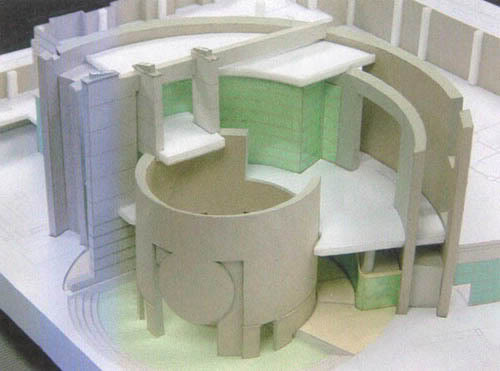
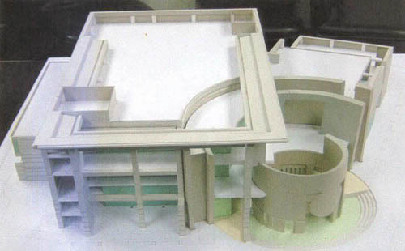
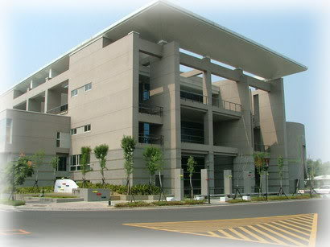

記得2000年退伍的那份工作是在建築師事務所，到現在我還是無法忘記當時的情形，真的是操翻了...只要比圖(競圖)都有我的份，因為我最菜...而且都要熬夜(通宵達旦)!


日前跟同事聊到作模型的事情，回家翻了資料找到當年做的第一個模型相片，這是一個1/100的模型(配置範圍跟A1差不多)，主管也不管你會不會，結果我就硬著頭皮下去做了，很多東西都嘛是在工作磨練中學得，學校教書的不怎麼管用，所以幾乎天天給人訂...
現在看到這個建築物真的蓋好了，有點小感動哩!
但是一直沒有機會到嘉義看看，以下幾張是從網路上搜尋到的相片，跟大家分享一下~


所以只要你有心，肯下苦工一定能有一番成就的，我們姑且不論有多少成就，重要的是你學了多少，而你是否也願意奉獻所學幫助別人呢!
我們現再正在做一件不可能的任務，在這裡我們不會"藏步"，只要你願意跟我們一起努力，大家都可以找到自己的一片天及方向的~
你說是吧!!